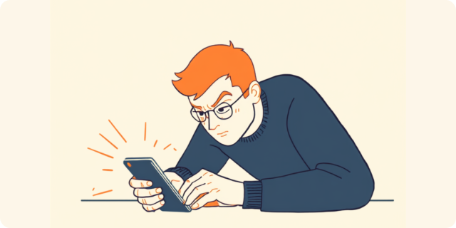

躁状態の間は、口数が増えたり、思いついたことをすぐ実行に移したり、いつもより「調子がいい」と感じることがあります。ただ、その勢いのまま送った長文メッセージや、勢いで言ってしまった一言を、うつに転じたあとで思い出して激しい自己嫌悪に陥る、という声をよく聞きます。この記事では、双極性障害のある方が仕事の中で抱えやすい「躁のあとの後悔」とどう向き合っているか、職場への伝え方（クローズ就労・オープン就労）や使える制度も含めて、当事者の声をもとに整理しました（2026年7月時点の情報です）。
PR


躁状態の「絶好調」が、あとで牙をむく
躁状態のときは、本人にとってはむしろ「調子がいい」時期に感じられることが多いようです。アイデアが次々に湧いて、いつもなら躊躇するような提案も自信満々にできてしまう。夜遅くまで作業が進むし、疲れも感じにくい。周りから見ても「今日はやけに元気だな」くらいにしか映らないことがあります。
 メンタルヘルスについて考えるイメージ
メンタルヘルスについて考えるイメージ
ただ、その勢いのままできもしない約束を引き受けてしまったり、思ったことをそのまま口にしてしまったりすることも起きやすくなるとされています。本人はその瞬間、悪気があるわけでも、無理をしている自覚があるわけでもありません。むしろ「今の自分は絶好調だ」と感じているからこそ、ブレーキがかかりにくいのだと言います。
!
躁状態の程度や現れ方には個人差があり、この記事で挙げる例がそのまま当てはまるとは限りません。気になる変化がある場合は、自己判断せず主治医に相談することをお勧めします。

調子が良かったはずの夜のことを、朝になって何度も確かめてしまう
「深夜2時に、上司に長文のメッセージを送っていました。『今の業務フローには根本的な問題がある、自分ならもっと良くできる』みたいな内容を、箇条書きで10個くらい。翌朝読み返して、椅子から崩れ落ちそうになりました。内容自体は的外れじゃなかったんですが、伝え方も、送った時間帯も、完全に躁状態のそれでした。」
30代・男性（双極性障害II型・企画職）
うつに転じてから襲ってくる、後悔と自己嫌悪
厄介なのは、躁状態の間はブレーキがかかりにくい一方で、うつ状態に転じたとたん、今度はその時の言動を鮮明に思い出して激しく後悔するという振れ幅です。エネルギーに満ちていた自分と、今の消耗しきった自分の落差が大きいほど、「なんであんなことを」という自己嫌悪も強くなりやすいと言われています。
謝りたい気持ちがあっても、うつ状態のときは謝罪の連絡を送ること自体が大きな負担に感じられます。結果として、謝るタイミングを逃したまま気まずさだけが残り、それがまた次の不調のきっかけになってしまうこともあるようです。
「躁の時に同僚の仕事のやり方をきつく指摘してしまって、うつに転じてから『なんであんな言い方したんだろう』と何日も引きずりました。謝りたいのに、うつのときは会話すること自体がしんどくて動けない。結局謝れないまま数週間が過ぎて、余計に気まずくなってしまいました。」
20代・女性（双極性障害I型・事務職）
i
躁状態の間の言動を後悔すること自体は、決して珍しいことではないとされています。自分を責めすぎず、まずは主治医や支援者に「振り返りがつらい」という気持ちを話してみることも一つの対処法です。
職場にどう伝える、後悔を減らすための「事前のお願い」
後悔そのものをゼロにすることは難しくても、躁状態のサインを事前に周囲と共有しておくことで、行き過ぎた言動やそれによる後悔を減らせる場合があるとされています。躁状態のさなかは自分では気づきにくいため、周りの人に「気づいたら教えてほしい」とあらかじめお願いしておく、という工夫です。
事前に伝えておくと助かること
- 「口数が急に増えたり、いつもより強気な発言が続いたら、遠慮なく教えてください」
- 「深夜のメッセージは、返信は翌朝で大丈夫です。むしろ送っていること自体を心配してほしいです」
- 「大きな決断や約束は、一晩置いてから返事させてください」
- 「通院日は事前に共有するので、その前後は無理のない業務量にしてもらえると助かります」
「大きな決断は一晩寝かせる」というルールを自分と職場の間で決めておくだけでも、後悔につながる場面をだいぶ減らせたという声があります。完璧に防ぐことより、被害を小さくする工夫として考えてみてください。
ミミ
病名や症状の詳細まですべて伝える義務はありません。業務に関わる範囲で、必要な相手に必要な分だけ共有するという考え方で十分とされています。信頼できる上司が一人でもいれば、その人を通じてチーム内の調整をお願いするという方法もあります。
そもそも障害を職場に開示するオープン就労にするか、開示しないクローズ就労にするかで悩む人も少なくありません。オープン就労では合理的配慮を受けやすくなる一方、クローズ就労では気を遣われずに働ける自由さがある反面、体調の変化を理解してもらいにくく、いずれ「バレるのでは」という不安を抱え続けることになりやすいとも言われています。どちらが正解というものではなく、自分がどちらの負担なら耐えやすいかを、支援者と一緒に考えていくことになるようです。
使える制度と、一人で抱えないための相談先
精神障害者保健福祉手帳という選択肢
双極性障害は気分障害の一つとして、精神障害者保健福祉手帳の対象になり得るとされています。等級は症状の程度や生活への影響によって異なるため、詳しくは主治医や自治体の障害福祉窓口に確認するのが確実です（2026年7月時点の情報です）。手帳を取得すると、障害者雇用枠での就職や、企業側の合理的配慮を前提にした働き方を選びやすくなる場合があります。
相談できる窓口
- 主治医・かかりつけの精神科（症状の記録や服薬の相談）
- 職場に選任されている産業医（50人以上の事業場に選任義務あり）
- 精神保健福祉センター、自治体の障害福祉窓口
- 就労移行支援事業所（症状との付き合い方を含めた就労準備）
「後悔している自分」を責め続けるより、「次に同じことが起きたときにどうするか」を主治医や支援者と一緒に考える方が、少しずつ楽になっていくという声が多いです。一人で抱え込まなくて大丈夫です。
ミミ
躁状態・うつ状態の現れ方や、後悔との向き合い方には個人差があります。この記事の内容がそのまま当てはまるとは限らないため、実際の判断は主治医・支援者・自治体の窓口とよく相談しながら進めることをお勧めします（2026年7月時点の情報です）。
あの時の自分を消すことはできなくても、次にどう向き合うかは、今から選び直せます。後悔していること自体が、もう一人で戦っている証拠でもあります。
よくある質問
Q. 双極性障害でも障害者手帳は取れますか？
双極性障害は気分障害の一つとして、精神障害者保健福祉手帳の対象になり得るとされています。症状の程度や生活への影響によって等級が変わるため、詳しくは主治医や自治体の障害福祉窓口にご確認ください（2026年7月時点の情報です）。
Q. 躁状態は自分で気づけますか？
躁状態のさなかは調子が良いと感じやすく、自分だけで変化に気づくのは難しいとされています。普段との違いをメモしておく、家族や信頼できる人にサインを共有しておくといった工夫が助けになる場合があります。
Q. 職場にどこまで伝えればいいですか？
病名や症状の詳細まで伝える義務はありません。業務に影響が出やすい場面や、あらかじめお願いしておきたい対応など、必要な相手に必要な範囲で伝えるという考え方で問題ないとされています。
Q. 診断されたら、この先ずっと同じ働き方は難しいですか？
断定はできませんが、通院や服薬を続けながら、働き方や職場の理解を調整して長く働き続けている人も多くいます。一人で抱え込まず、主治医や支援者と状況を共有しながら進めることが助けになるとされています。
Q. クローズ就労とオープン就労、どちらがいいですか？
一概にどちらが良いとは言えず、本人の状況や職場環境によって異なるとされています。オープン就労では合理的配慮を受けやすい一方、クローズ就労では自由度がある反面、体調変化への理解を得にくい場合があります。迷う場合は就労移行支援機関などの支援者に相談しながら決めていくことをお勧めします。
この5点を頭に置いておくだけで、少し気持ちが軽くなるかもしれません
PR


一人で抱え込む前に、今の気持ちを話してみませんか
「まだ迷っている」段階でも大丈夫です。mimemimeの無料相談は、今の状況の整理から一緒に始められます。
無料で話してみる
新
おのざる ／ mimemime代表
就労支援の現場で当事者の声に向き合い続けてきた経験をもとに、生きた情報をお届けしています。